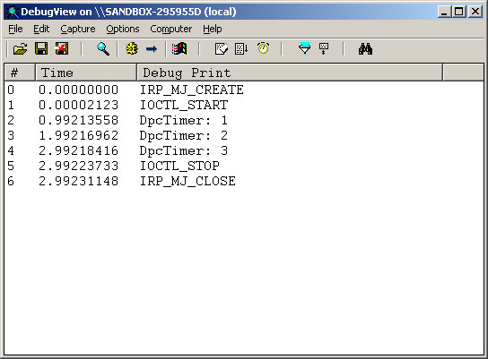

參考資訊：
https://wasm.in/
http://four-f.narod.ru/
https://github.com/steward-fu/ddk
http://www.delphibasics.info/home/delphibasicsprojects/delphidriverdevelopmentkit
main.c
#include <ntddk.h>
#define IOCTL_START CTL_CODE(FILE_DEVICE_UNKNOWN, 0x800, METHOD_BUFFERED, FILE_ANY_ACCESS)
#define IOCTL_STOP CTL_CODE(FILE_DEVICE_UNKNOWN, 0x801, METHOD_BUFFERED, FILE_ANY_ACCESS)
#define DEV_NAME L"\\Device\\MyDriver"
#define SYM_NAME L"\\DosDevices\\MyDriver"
ULONG dwTimerCnt = 0;
KDPC stTimerDPC = { 0 };
KTIMER stTimerObj = { 0 };
VOID OnTimer(struct _KDPC *Dpc, PVOID DeferredContext, PVOID SystemArgument1, PVOID SystemArgument2)
{
dwTimerCnt += 1;
DbgPrint("DpcTimer: %d\n", dwTimerCnt);
}
void Unload(PDRIVER_OBJECT pMyDriver)
{
UNICODE_STRING usSymboName = { 0 };
RtlInitUnicodeString(&usSymboName, L"\\DosDevices\\MyDriver");
IoDeleteSymbolicLink(&usSymboName);
IoDeleteDevice(pMyDriver->DeviceObject);
}
NTSTATUS IrpIOCTL(PDEVICE_OBJECT pMyDevice, PIRP pIrp)
{
LARGE_INTEGER stTimeCnt = { 0 };
PIO_STACK_LOCATION psk = IoGetCurrentIrpStackLocation(pIrp);
switch (psk->Parameters.DeviceIoControl.IoControlCode) {
case IOCTL_START:
DbgPrint("IOCTL_START");
dwTimerCnt = 0;
stTimeCnt.HighPart |= -1;
stTimeCnt.LowPart = -10000000;
KeSetTimerEx(&stTimerObj, stTimeCnt, 1000, &stTimerDPC);
break;
case IOCTL_STOP:
DbgPrint("IOCTL_STOP");
KeCancelTimer(&stTimerObj);
break;
}
pIrp->IoStatus.Information = 0;
pIrp->IoStatus.Status = STATUS_SUCCESS;
IoCompleteRequest(pIrp, IO_NO_INCREMENT);
return STATUS_SUCCESS;
}
NTSTATUS IrpFile(PDEVICE_OBJECT pMyDevice, PIRP pIrp)
{
PIO_STACK_LOCATION psk = IoGetCurrentIrpStackLocation(pIrp);
switch (psk->MajorFunction) {
case IRP_MJ_CREATE:
DbgPrint("IRP_MJ_CREATE");
break;
case IRP_MJ_CLOSE:
DbgPrint("IRP_MJ_CLOSE");
break;
}
IoCompleteRequest(pIrp, IO_NO_INCREMENT);
return STATUS_SUCCESS;
}
NTSTATUS DriverEntry(PDRIVER_OBJECT pMyDriver, PUNICODE_STRING pMyRegistry)
{
PDEVICE_OBJECT pMyDevice = NULL;
UNICODE_STRING usSymboName = { 0 };
UNICODE_STRING usDeviceName = { 0 };
pMyDriver->MajorFunction[IRP_MJ_CREATE] = IrpFile;
pMyDriver->MajorFunction[IRP_MJ_CLOSE] = IrpFile;
pMyDriver->MajorFunction[IRP_MJ_DEVICE_CONTROL] = IrpIOCTL;
pMyDriver->DriverUnload = Unload;
RtlInitUnicodeString(&usDeviceName, L"\\Device\\MyDriver");
IoCreateDevice(pMyDriver, 0, &usDeviceName, FILE_DEVICE_UNKNOWN, 0, FALSE, &pMyDevice);
RtlInitUnicodeString(&usSymboName, L"\\DosDevices\\MyDriver");
KeInitializeTimer(&stTimerObj);
KeInitializeDpc(&stTimerDPC, OnTimer, pMyDevice);
IoCreateSymbolicLink(&usSymboName, &usDeviceName);
pMyDevice->Flags &= ~DO_DEVICE_INITIALIZING;
pMyDevice->Flags |= DO_BUFFERED_IO;
return STATUS_SUCCESS;
}
app.c
#include <stdio.h>
#include <stdlib.h>
#include <windows.h>
#include <winioctl.h>
#include <strsafe.h>
#include <setupapi.h>
#define IOCTL_START CTL_CODE(FILE_DEVICE_UNKNOWN, 0x800, METHOD_BUFFERED, FILE_ANY_ACCESS)
#define IOCTL_STOP CTL_CODE(FILE_DEVICE_UNKNOWN, 0x801, METHOD_BUFFERED, FILE_ANY_ACCESS)
int main(int argc, char* argv[])
{
DWORD dwRet = 0;
HANDLE hFile = NULL;
hFile = CreateFile("\\\\.\\MyDriver", GENERIC_READ | GENERIC_WRITE, 0, NULL, OPEN_EXISTING, 0, NULL);
DeviceIoControl(hFile, IOCTL_START, NULL, 0, NULL, 0, &dwRet, NULL);
Sleep(3000);
DeviceIoControl(hFile, IOCTL_STOP, NULL, 0, NULL, 0, &dwRet, NULL);
CloseHandle(hFile);
return 0;
}
完成
